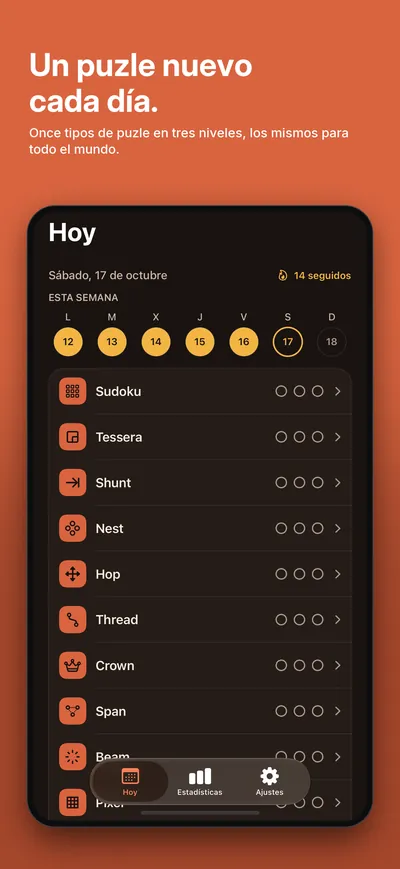
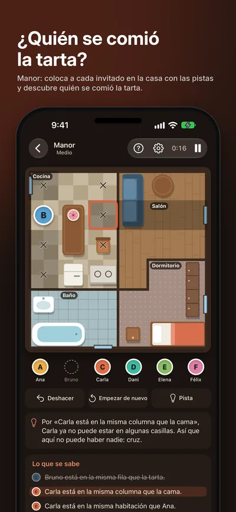
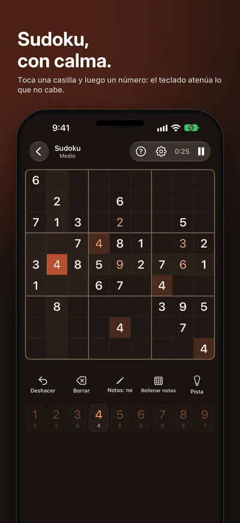
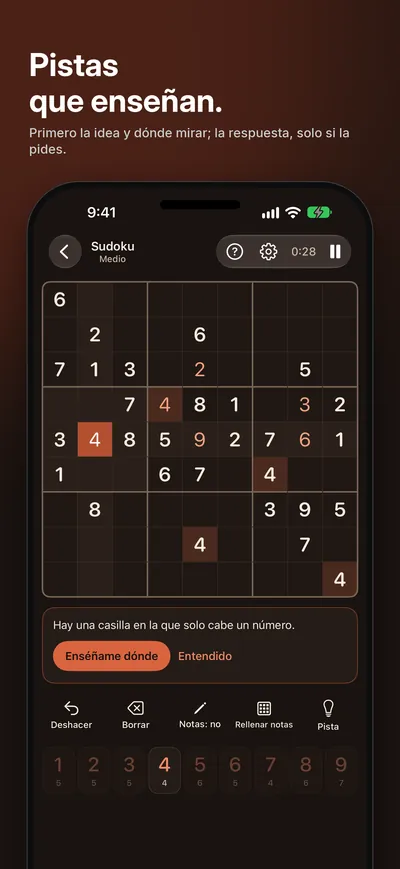
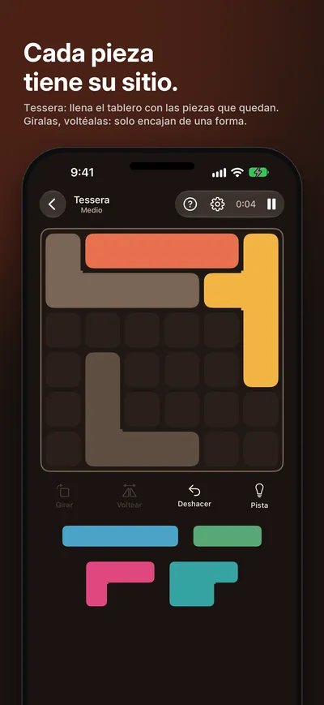
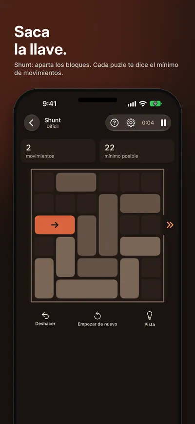
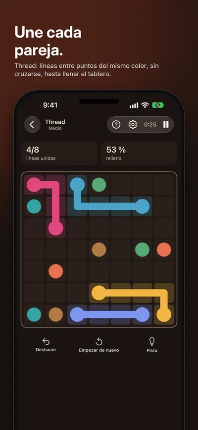
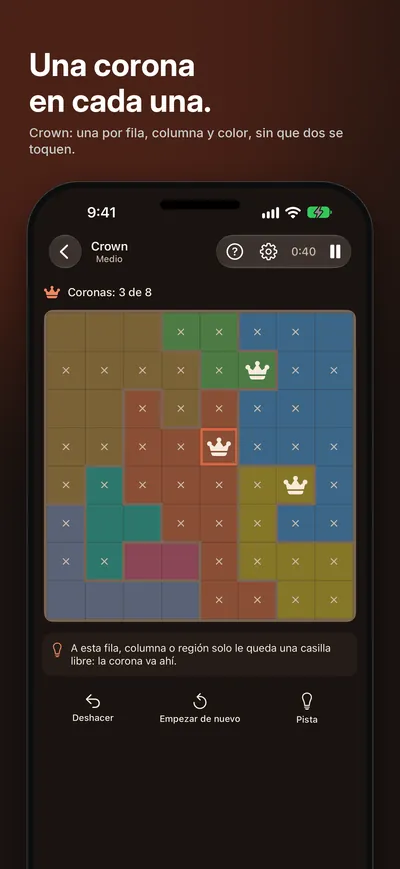
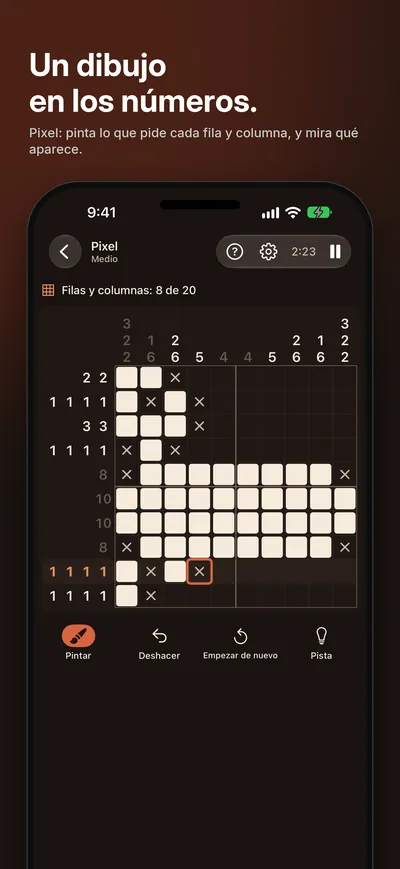
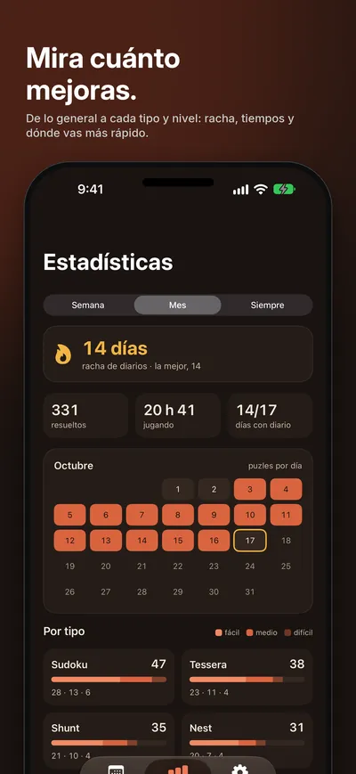

Seize Apps · iOS
Logicle
Logicle reúne puzles lógicos de once tipos, y nada más: sin anuncios, sin suscripción, sin cuenta. Rellena un Sudoku, encaja todas las piezas en un tablero de Tessera, aparta los bloques para sacar la llave en Shunt, une los puntos en Thread, coloca las coronas en Crown, pinta un dibujo en Pixel o sigue las pistas por una casa en Manor hasta saber quién se comió la tarta. Cada tipo tiene cada día un puzle fácil, uno medio y uno difícil, iguales para todo el mundo, y una colección numerada que no se acaba.










Qué hace
Una sola cosa, bien hecha.
- 01 / DIARIO
Tres al día, los mismos para todos
Cada día llega a la vez para todo el mundo un puzle fácil, uno medio y uno difícil de cada tipo. Mantén tu racha, mira cómo queda tu tiempo en las clasificaciones diarias de Game Center y consigue logros.
- 02 / JUGAR
Hechos para jugarlos, no para pelearte con ellos
Sudoku como le gusta a quien juega bien: casilla y número, o coge un número y toca dónde va, con pistas que enseñan la idea antes que la respuesta. Cada tipo se explica en unas pantallas animadas la primera vez que lo juegas, en iPhone o en iPad.
- 03 / TUYO
Gratis para jugar, tuyo para siempre
Los diarios y los primeros de cada nivel son gratis. Desbloquea un tipo, o todos a la vez, también los que vendrán: una compra, para siempre, compartida con tu familia. Estadísticas desde tu racha y tu calendario hasta cada tipo y cada nivel, temas de color, claro y oscuro, y tu progreso en todos tus dispositivos con iCloud.
Privacidad
Tuyo, no nuestro.
Tus partidas, tiempos y rachas se quedan en tu dispositivo y se sincronizan con tu propio iCloud (puedes apagarlo). Si usas Game Center, Apple recibe tus tiempos de los diarios, tu racha y tus totales, y tus logros. Los puzles se hacen en el dispositivo: sin cuenta, sin anuncios, sin analítica y sin seguimiento.
Una app de Seize Apps.